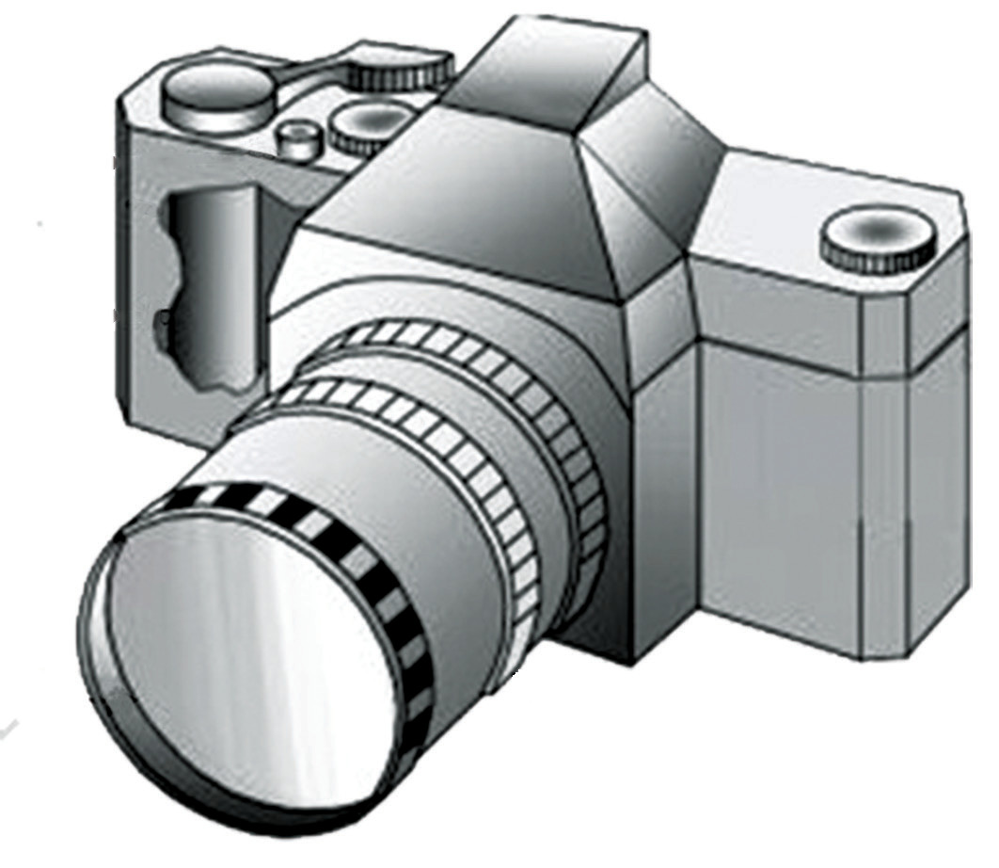

shutter and a mounting base. Figure 6.12 shows some parts of a lens camera.

The lens is the image-forming device in a camera. The focal length of a lens determines the size of the image that will be formed on the film. Therefore, four basic categories of lenses exist.
These are:
Normal lens which allows the viewing field of approximately 50 degrees, giving a picture that is normal in size relative to the background and which looks natural to the viewer.
Wide angle lens which enables a view of 90 degrees and is used when smaller objects are to be photographed.
Telephoto lens or long-focus lens which has a wider field of view than the normal lens. It shows enlarged detail of the image over the same film area. The telephoto lens has a long reach, allowing you to capture an object that is far away. You have probably seen a photograph where an object is in focus but the background is blurred; this is often done with a telephoto lens.
Interchangeable lens which offers the photographer the opportunity to select a focal length that is best for a given situation. In recent years, variable focal length or “zoom” lenses have become very popular.
The diaphragm determines the amount of light that passes through the lens by changing the size of the aperture. The aperture is an opening whose diameter is adjustable. The size of the aperture is measured in f-number; the larger the number the smaller the aperture. Most cameras use an iris-type diaphragm, which consists of a number of very thin metal blades. They are mounted so that the size of the lens opening can be changed by a rotating ring or a moving lever.
The shutter is a mechanical device that acts as a gate, controlling the duration of time that light is allowed to pass through the lens and fall on the film.
A film is a light-sensitive surface of the camera. It is normally rolled to the back of the camera. In most cameras, the film is wound up on a spool with an interleaving light-tight backing paper. However, in a digital camera, an electronic detector called a charge-coupled device (CCD) array is used instead of a film. The digital information is stored on a memory chip for play back on the screen of the camera.